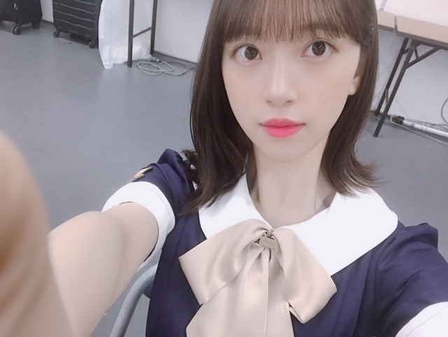
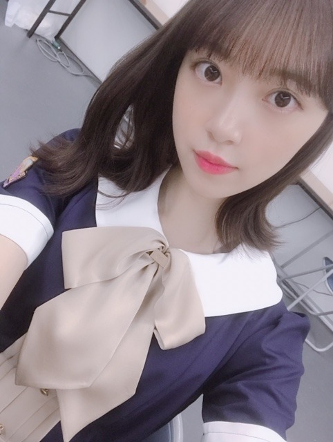
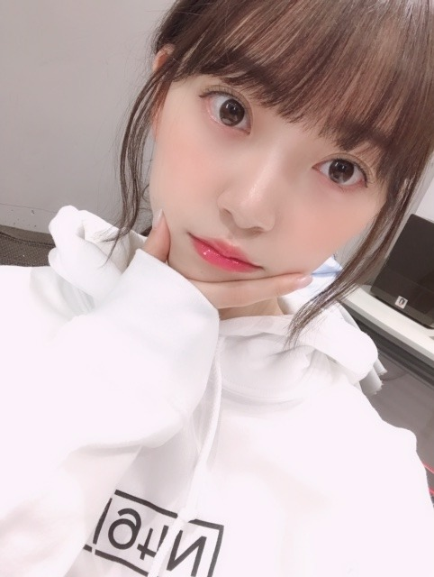
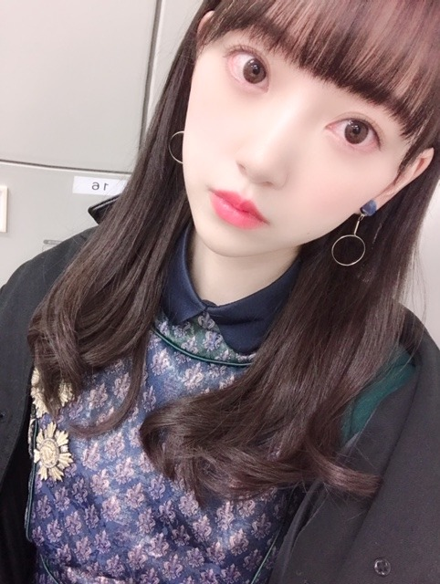

2019/0804Sun大阪にいるで〜知ってるで〜


新制服かわいい〜
Am I loving? フルサイズは初披露でした☺︎
5人おそろいのリップつけて出ましたー！(わたしが塗り歩いた)
みんなえ〜？！とか言わずにニコニコされるがままなのがかわいすぎてほんとこのメンバー好きだなって♡
これからの披露もたのしみ！
いつかMVできたらいいな
今年の夏も美白命で頑張ります！！！
今月12日発売のarで日焼け止め、美白特集してるので発売されたらぜひみてねー！

真顔

真顔
大阪なう☺︎
暑いから気をつけようね〜〜
2019/08/04 14:18
コメント(301)
ブログ更新ありがとう。
大阪にいるなんてびっくり！
名古屋の全握行くよ。Am I loving 楽しみです。
暑い日が続くから体調に気を付けてね。
大阪にいるなんてびっくり！
名古屋の全握行くよ。Am I loving 楽しみです。
暑い日が続くから体調に気を付けてね。
結婚してください
未央奈～ こんにちは
「大阪なう」ということで、全握・ミニライブの中でのブログ更新ありがとうございます。
台湾からの弾丸ショットでの大阪、ホントにおつかれさまです。「Sing Out!」のフルコーラス披露もよかったけど、「Am I Loving ？」での存在感も抜群でした。強引リップも含めてのエピソードトークもほんわかしました。
そして握手会、映画会で岐阜への言ったことを伝えられたこと何よりでした。ありがとうございました。
おつかれのことと思いますが、暑さに負けず、体調管理の方、よろしくお願いいたします。
「大阪なう」ということで、全握・ミニライブの中でのブログ更新ありがとうございます。
台湾からの弾丸ショットでの大阪、ホントにおつかれさまです。「Sing Out!」のフルコーラス披露もよかったけど、「Am I Loving ？」での存在感も抜群でした。強引リップも含めてのエピソードトークもほんわかしました。
そして握手会、映画会で岐阜への言ったことを伝えられたこと何よりでした。ありがとうございました。
おつかれのことと思いますが、暑さに負けず、体調管理の方、よろしくお願いいたします。
台北から大阪に戻りの握手会お疲れ！
24枚目シングルの衣装も披露されて大阪に行った人はラッキーだったと思うな～
テレビでその内見れるからいいんだけどね笑
未央奈ちゃんのリップを塗った唇は綺麗。
ブログのタイトルも大阪って感じだよな！
未央奈ちゃんは関西弁は少しは話せたりするの？
東海出身の人って少し関西気味じゃない？喋りが
24枚目シングルの衣装も披露されて大阪に行った人はラッキーだったと思うな～
テレビでその内見れるからいいんだけどね笑
未央奈ちゃんのリップを塗った唇は綺麗。
ブログのタイトルも大阪って感じだよな！
未央奈ちゃんは関西弁は少しは話せたりするの？
東海出身の人って少し関西気味じゃない？喋りが
ほりっぴ～、ナンチです♪
ブログ更新ありがとう～
大阪全握お疲れ様でした
楽しめたかな
めっちゃ暑かったから身体休めてね
快食快眠だよ
ブログ更新ありがとう～
大阪全握お疲れ様でした
楽しめたかな
めっちゃ暑かったから身体休めてね
快食快眠だよ
未央奈さん、こんばんは！
台湾からの大阪お疲れさまでした
新制服かわいいですね
大きなリボンが似合ってます(^_^)
5人おそろいのリップ見たかったな～
塗り歩いたの表現面白いです笑
美白命！
日差しが強いので日焼け対策
しっかりしないとね
真顔写真ありがとうございます
でも、なぜ真顔？？
まいっか
かわいいからf(^_^)
ゆっくり休んでくださいな
台湾からの大阪お疲れさまでした
新制服かわいいですね
大きなリボンが似合ってます(^_^)
5人おそろいのリップ見たかったな～
塗り歩いたの表現面白いです笑
美白命！
日差しが強いので日焼け対策
しっかりしないとね
真顔写真ありがとうございます
でも、なぜ真顔？？
まいっか
かわいいからf(^_^)
ゆっくり休んでくださいな
なんでそんなに白いのぉ～
ブログ更新ありがとう！！
ブログ更新した時ちょうど未央奈の列待機中でした！！
今日はお疲れさまです！！
そして、楽しかったー！！
今日は未央奈に元気もらったから明日からまた頑張れるー！！
また、来月の握手会もよろしくねぇー！！
ブログ更新した時ちょうど未央奈の列待機中でした！！
今日はお疲れさまです！！
そして、楽しかったー！！
今日は未央奈に元気もらったから明日からまた頑張れるー！！
また、来月の握手会もよろしくねぇー！！
旅行で北海道来てて大阪行けなかった
10日の個握と大阪全ツ2日間、幕張全握、神宮は行くからね！
北海道は東京とかよりは涼しかった！
10日の個握と大阪全ツ2日間、幕張全握、神宮は行くからね！
北海道は東京とかよりは涼しかった！
ブログ更新ありがとうね(*^^*)
写真多くて、しかも全部可愛くて最高です(≧▽≦)
大阪、目一杯楽しんでね(*^.^*)
写真多くて、しかも全部可愛くて最高です(≧▽≦)
大阪、目一杯楽しんでね(*^.^*)
応援してます！
こんばんは。ブログ更新ありがとうございます。
新制服可愛いー。ただでさえ可愛い子が可愛い服を着ている訳だから、向かうところ敵なしですよね。（笑）
日焼けも黒い肌も魅力的ではあるけれど、将来しみになるのが心配です。美白推進しましょう。
ではまた。
新制服可愛いー。ただでさえ可愛い子が可愛い服を着ている訳だから、向かうところ敵なしですよね。（笑）
日焼けも黒い肌も魅力的ではあるけれど、将来しみになるのが心配です。美白推進しましょう。
ではまた。
未央奈ちゃん、握手会お疲れ様です＞＜ゞ
新制服お披露目したのですね～♪
最近は、暖色系の制服が多かった気がするけど久々の寒色系の制服では？
そのせいか新鮮味がある～♪
未央奈ちゃんは、リボンタイプなのね
もう１つは、ネクタイタイプかな？
ライブでは、お揃いのリップつけて団結力を高めたのね♡
大阪でのライブでも披露してくれるのかな？
チケットも発券した事だし
未央奈ちゃんに真顔で見つめられる夢でも見るかな(笑)
おやすみなさいっ☆彡
新制服お披露目したのですね～♪
最近は、暖色系の制服が多かった気がするけど久々の寒色系の制服では？
そのせいか新鮮味がある～♪
未央奈ちゃんは、リボンタイプなのね
もう１つは、ネクタイタイプかな？
ライブでは、お揃いのリップつけて団結力を高めたのね♡
大阪でのライブでも披露してくれるのかな？
チケットも発券した事だし
未央奈ちゃんに真顔で見つめられる夢でも見るかな(笑)
おやすみなさいっ☆彡
未央奈～☆☆
ブログを読んでいたら、めちゅくちゃ楽しそうに
リップを塗り歩いている未央奈が目に浮かんできたよ。
本当にいいユニットだな～
Am I loving? のMV、観たすぎる～！
未央奈も暑さには気を付けてね。
ブログを読んでいたら、めちゅくちゃ楽しそうに
リップを塗り歩いている未央奈が目に浮かんできたよ。
本当にいいユニットだな～
Am I loving? のMV、観たすぎる～！
未央奈も暑さには気を付けてね。
大阪府民を勝手に代表して歓迎の意を表します。
「大阪におりまっせ～」「大阪に来てまっせ～」「知っとりま」「知っとるで」という表現もありますよ。「どないも、こないもあるか！」って、何処かで使ってください。
「大阪におりまっせ～」「大阪に来てまっせ～」「知っとりま」「知っとるで」という表現もありますよ。「どないも、こないもあるか！」って、何処かで使ってください。
堀ちゃんこんばんは！
今日は堀ちゃん大阪におったんやな〜、堀ちゃんが同じ関西におったゆうだけで、なんやめっちゃ嬉しいわ〜( ´ ▽ ` )♩
なんか美味しいもんでも食べれたんやろか？
また遊びに来てな〜(o^^o)♩
というわけで、今日は全国握手会お疲れ様でした！笑
昨日台湾で今日は大阪、移動だけでも疲れるでしょうに…本当に本当にお疲れ様です(>_<)
移動の疲れにはストレッチとか、ちょっとした筋トレとかいいかもしれません、座っている時間が長いと筋肉もこわばってしまうので、血流をよくしてあげると疲れも少し取れやすくなると思います(o^^o)
最近いろいろあって握手会に行けていないですが、また堀ちゃんに会いに行きたいなぁ( ´ ー ` )
今までは緊張してまともにお話できなかったですが、次は好きな音楽の話とかしたいなぁ、今から喋る練習しとこ(o^^o)笑
新制服！濃紺で素敵です！
堀ちゃんに凄く似合ってる感じがします、早く全身で見たい〜( ´ ▽ ` )♩
堀ちゃんが何でも似合うというのは大前提として、濃い系の色って最近の堀ちゃんでは少し珍しい気がして、また違った雰囲気が見られる気がして嬉しいです(o^^o)
それと個人的な趣味ですが青がめっちゃ好きなので嬉しいです、また楽しみが増えました( ´ ▽ ` )♩
美白の堀ちゃんも可愛すぎます、瞳に吸い込まれそう…(*´ー｀*)
ほんとに全部可愛いな〜、ずっと前から好きなのに今でも堀ちゃんの可愛さの大きさにビックリします(o^^o)
さてさて、気づけば8月も5日で京セラドームでのライブももう10日を切ってるんですね！
やっと参加できる喜びです、行きたすぎて行きたすぎて一日千秋の想いでした(*´〜｀*)
僕も堀ちゃんたちの魅力やパワーをしっかり受け止めて、もっと熱い夏にするぞー！p(^^q)
いつも思ってますが改めて、乃木坂46に入ってくれて、輝いて、見つけさせてくれて、ありがとうございます(^^)
堀ちゃんを好きなことが僕の人生でとてつもない幸運です(o^^o)
たくさんブログ嬉しいです！またコメントさせてくださいー！
今日は堀ちゃん大阪におったんやな〜、堀ちゃんが同じ関西におったゆうだけで、なんやめっちゃ嬉しいわ〜( ´ ▽ ` )♩
なんか美味しいもんでも食べれたんやろか？
また遊びに来てな〜(o^^o)♩
というわけで、今日は全国握手会お疲れ様でした！笑
昨日台湾で今日は大阪、移動だけでも疲れるでしょうに…本当に本当にお疲れ様です(>_<)
移動の疲れにはストレッチとか、ちょっとした筋トレとかいいかもしれません、座っている時間が長いと筋肉もこわばってしまうので、血流をよくしてあげると疲れも少し取れやすくなると思います(o^^o)
最近いろいろあって握手会に行けていないですが、また堀ちゃんに会いに行きたいなぁ( ´ ー ` )
今までは緊張してまともにお話できなかったですが、次は好きな音楽の話とかしたいなぁ、今から喋る練習しとこ(o^^o)笑
新制服！濃紺で素敵です！
堀ちゃんに凄く似合ってる感じがします、早く全身で見たい〜( ´ ▽ ` )♩
堀ちゃんが何でも似合うというのは大前提として、濃い系の色って最近の堀ちゃんでは少し珍しい気がして、また違った雰囲気が見られる気がして嬉しいです(o^^o)
それと個人的な趣味ですが青がめっちゃ好きなので嬉しいです、また楽しみが増えました( ´ ▽ ` )♩
美白の堀ちゃんも可愛すぎます、瞳に吸い込まれそう…(*´ー｀*)
ほんとに全部可愛いな〜、ずっと前から好きなのに今でも堀ちゃんの可愛さの大きさにビックリします(o^^o)
さてさて、気づけば8月も5日で京セラドームでのライブももう10日を切ってるんですね！
やっと参加できる喜びです、行きたすぎて行きたすぎて一日千秋の想いでした(*´〜｀*)
僕も堀ちゃんたちの魅力やパワーをしっかり受け止めて、もっと熱い夏にするぞー！p(^^q)
いつも思ってますが改めて、乃木坂46に入ってくれて、輝いて、見つけさせてくれて、ありがとうございます(^^)
堀ちゃんを好きなことが僕の人生でとてつもない幸運です(o^^o)
たくさんブログ嬉しいです！またコメントさせてくださいー！
全国握手会行きました！
未央奈めっちゃかわいかったです！
僕の声が小さくてすみませんでした！m(_ _)m
未央奈めっちゃかわいかったです！
僕の声が小さくてすみませんでした！m(_ _)m
めっちゃ可愛い
みおちゃんブログ更新ありがとう♪
握手会お疲れ様♪俺もそのユニット好きー♪
みんな可愛いですもん！笑
可愛い写真ありがとう\(๑´ω`๑)/
福岡のトゥモロー⊿
握手会お疲れ様♪俺もそのユニット好きー♪
みんな可愛いですもん！笑
可愛い写真ありがとう\(๑´ω`๑)/
福岡のトゥモロー⊿
もちろん見るよ!
大阪いいですね〜〜！！！
私はたこ焼きが大好物なので本場のたこ焼きを食べてみたいです
新制服素敵ですね
Am I loving?のMVいつか出てほしいですよね〜
未央奈ちゃんは年中美白で本当に凄いなぁと思います！
私はもう焼けちゃいました笑笑
あと、一週間遅くなりましたが乃木中でのホラー怖すぎました！！私は怖い系が無理なのでほとんど見れなかったです笑笑
おばあちゃんが隣で見てて、そのリアクションをひたすら見てました笑 今、怖いシーンって聞いて違うよっておばあちゃんが答えたのに画面見たら怖いシーンだったのでトラウマになりました笑笑
夏は怖い系が多いので困っちゃうなぁ〜〜笑笑
未央奈ちゃんのように怖い系が大丈夫だったらいいなぁと思う日々です笑笑
それではまたコメントします！！
大阪ライブに向けて頑張ってください！
私はたこ焼きが大好物なので本場のたこ焼きを食べてみたいです
新制服素敵ですね
Am I loving?のMVいつか出てほしいですよね〜
未央奈ちゃんは年中美白で本当に凄いなぁと思います！
私はもう焼けちゃいました笑笑
あと、一週間遅くなりましたが乃木中でのホラー怖すぎました！！私は怖い系が無理なのでほとんど見れなかったです笑笑
おばあちゃんが隣で見てて、そのリアクションをひたすら見てました笑 今、怖いシーンって聞いて違うよっておばあちゃんが答えたのに画面見たら怖いシーンだったのでトラウマになりました笑笑
夏は怖い系が多いので困っちゃうなぁ〜〜笑笑
未央奈ちゃんのように怖い系が大丈夫だったらいいなぁと思う日々です笑笑
それではまたコメントします！！
大阪ライブに向けて頑張ってください！
堀さん、こんばんは。
無事帰って来てくれて嬉しいです。
制服はリボン大きくて可愛いですね。それにどの写真の髪型も、外ハネもまとめてるのもロングで耳出てるのも全部良いですね。
3枚目の写真からも分かる通り堀さんの美白の美肌はプリンセスらしさを引き立ててくれます。一人称”わらわ”でもおかしくないくらいの姫君です。
毎日多忙だと思うので、何とかリラックスする時間も取ってくださいね。
無事帰って来てくれて嬉しいです。
制服はリボン大きくて可愛いですね。それにどの写真の髪型も、外ハネもまとめてるのもロングで耳出てるのも全部良いですね。
3枚目の写真からも分かる通り堀さんの美白の美肌はプリンセスらしさを引き立ててくれます。一人称”わらわ”でもおかしくないくらいの姫君です。
毎日多忙だと思うので、何とかリラックスする時間も取ってくださいね。
未央奈！
大阪全握お疲れ様です。
行けなかったけど、未央奈が楽しくやれてそうなのが何よりです。
制服、かわいいね！
大阪全握お疲れ様です。
行けなかったけど、未央奈が楽しくやれてそうなのが何よりです。
制服、かわいいね！
未央奈ちゃんの好きそうな色の新衣装だね(^^)
美白のおかげで色が映えるやつ！
MV楽しみだなー
美白のおかげで色が映えるやつ！
MV楽しみだなー
堀ちゃん、大好きだよー
未央奈さん、おはよう御座います！今年の10月で、59歳になるおじさんには、未央奈さんが、立派な社会人、そして人として成長し活躍する姿は、まるで自分の子供のように、いとおしく、嬉しく思い、陰ながら、そっと応援しています！未央奈さん、いつも本当に、有難う御座います！ところで、私の地元、大阪は、どない？楽しめました？これからも、素敵な思い出、沢山、作っていって下さいね！お身体、どうか、くれぐれも、ご自愛下さいませ！
未央奈ちゃん更新ありがとー！
新制服めっちゃ可愛い！
良き！
写真たくさんありがとー！
真顔でも可愛いの隠せてないよ(≧∀≦)
ではでは
今日も素敵な１日を。
新制服めっちゃ可愛い！
良き！
写真たくさんありがとー！
真顔でも可愛いの隠せてないよ(≧∀≦)
ではでは
今日も素敵な１日を。
おはようございます‼︎
ブログ更新、ありがとうございます♪
いやいや、ほんと毎日、暑いですね〜
東京でも十分暑いですが、最近大阪に出張に行った同僚が、大阪の暑さはその上を行くと言ってました。
未央奈、体調は大丈夫ですか？
もともと体が頑丈な方ではないと思うので、ちょっと心配です。
無理はしないでくださいね…‼︎
新制服、いい感じですね〜
なんか、海外の航空会社のCAさんみたい♪
髪をアップにしている写真もすごくいい…‼︎
未央奈の肌の透明感が画像を通して伝わってきます♪
前髪の透け感、触覚も清潔感に溢れていて、全体的に高貴なイメージになっていて。
なんか、ヨーロッパの小国のお姫様みたい♪
自分は好きな写真ですね〜
さて、気がつくと今年の夏も中盤戦ですね‼︎
今年は梅雨が長かったから、ここまであっという間に来ちゃった感じ。
もう甲子園の本戦かあ、みたいな。
あ、でも、乃木坂にはまだ夏の大イベントが待ってますね‼︎
京セラドームと神宮でのライブ。
また大阪に行くんやろ？
知ってるで〜(笑)
暑い中、リハも含めて大変だと思うけど、頑張ってください‼︎
ではでは、また。
今日も未央奈にとっていい1日になりますように♪
P.S 今週末、楽しみにしてます…‼︎
ブログ更新、ありがとうございます♪
いやいや、ほんと毎日、暑いですね〜
東京でも十分暑いですが、最近大阪に出張に行った同僚が、大阪の暑さはその上を行くと言ってました。
未央奈、体調は大丈夫ですか？
もともと体が頑丈な方ではないと思うので、ちょっと心配です。
無理はしないでくださいね…‼︎
新制服、いい感じですね〜
なんか、海外の航空会社のCAさんみたい♪
髪をアップにしている写真もすごくいい…‼︎
未央奈の肌の透明感が画像を通して伝わってきます♪
前髪の透け感、触覚も清潔感に溢れていて、全体的に高貴なイメージになっていて。
なんか、ヨーロッパの小国のお姫様みたい♪
自分は好きな写真ですね〜
さて、気がつくと今年の夏も中盤戦ですね‼︎
今年は梅雨が長かったから、ここまであっという間に来ちゃった感じ。
もう甲子園の本戦かあ、みたいな。
あ、でも、乃木坂にはまだ夏の大イベントが待ってますね‼︎
京セラドームと神宮でのライブ。
また大阪に行くんやろ？
知ってるで〜(笑)
暑い中、リハも含めて大変だと思うけど、頑張ってください‼︎
ではでは、また。
今日も未央奈にとっていい1日になりますように♪
P.S 今週末、楽しみにしてます…‼︎
大阪全握おつかれさまです！
未央奈の新制服とても似合ってました！
暑いですがお仕事頑張ってくださいっ！
未央奈の新制服とても似合ってました！
暑いですがお仕事頑張ってくださいっ！
ブログ更新ありがとー。
Am I Loving?のフルサイズ披露、見てみたい。。
本当にMVができたらいいなって思うくらい良い曲だし…。お揃いのリップをつける未央奈のプロデュースっぷりも良きですね！
新しい制服もとても似合ってます。
それも近くで見てみたいなー。
24thの全握もよろしくです！
じゃあ最後に。
未央奈も体調管理には気をつけてねm(_ _)m
暑さ対策は大事だし、熱中症とかも怖いからこまめな水分補給と休憩を取るようにね。。
忙しい日々で休む時間もなかなか取れないと思うけど、睡眠と食事は大切に。心と体が追いつかない…みたいにならないようにね。
ではでは、ねこでした。
今日も一日暑いので、
水分しっかりとって、
体をいたわって下さいね！
水分しっかりとって、
体をいたわって下さいね！
やっぱ可愛い未央奈(ﾉ≧▽≦)ﾉ
未央奈ブログ更新ありがとう〜！可愛い握手会お疲れ様。
昨日はミニラブ拝見
新制服も可愛かったけど未央が一番可愛かったよ！
ルージュを合わせにいたのはすごかった(笑)
会場は暑かったので体調には気を付けてね
大阪の全ツで待ってるね！
新制服も可愛かったけど未央が一番可愛かったよ！
ルージュを合わせにいたのはすごかった(笑)
会場は暑かったので体調には気を付けてね
大阪の全ツで待ってるね！
新制服凄い可愛い。最高だよ。この格好なら全握に行くのも楽しみだよ。熱中症だけ注意して、並ぶよ。
未央奈ちゃん、ブログ更新ありがとうございます！
新制服、可愛いですね！！
前回のも良かったですが、今回のは今回で、とてもおしゃれな感じでいいですね！
Am I Loving?のフルサイズでの初披露、観たかったです。
リップのお話、とても微笑ましいですし、素敵ですね！
今週末の握手会や来週のライブなど、イベントが続くので、体調に気をつけてくださいね！！
未央奈ちゃん、大好きです
新制服、可愛いですね！！
前回のも良かったですが、今回のは今回で、とてもおしゃれな感じでいいですね！
Am I Loving?のフルサイズでの初披露、観たかったです。
リップのお話、とても微笑ましいですし、素敵ですね！
今週末の握手会や来週のライブなど、イベントが続くので、体調に気をつけてくださいね！！
未央奈ちゃん、大好きです
何か未央奈ワールドって感じだね笑
息子とライブチケット昨日買えました。
ファミリー席で息子と応援します。
大阪にもういるのですか？早いですね。
かなりスタンドでも前なので嬉しいです。
映画も息子といきました！
暑いけどお体ご自愛ください。
ファミリー席で息子と応援します。
大阪にもういるのですか？早いですね。
かなりスタンドでも前なので嬉しいです。
映画も息子といきました！
暑いけどお体ご自愛ください。
未央奈ちゃんありがとうございます‼今年も楽しみにしてます！ありがとうございます！頑張ります‼頑張って下さい！お疲れ様です！頑張ります‼
未央奈ちゃんはいつも可愛いです！
ブログ更新ありがとうございます！
ブログ更新ありがとうございます！
更新ありがとう〜！！
いつもたくさん更新してくれてうれしい︎︎︎︎☺︎
本当に忙しいのにありがとうね！！！
新制服かわいい〜♡
わたしもほしい！！！
売って欲しいのになぁ〜︎︎︎︎☺︎笑笑
みおなちゃんの美白はほんとに羨ましい!!!
arで学ぶね〜( ¨̮ )
これからも応援してるね
いつもたくさん更新してくれてうれしい︎︎︎︎☺︎
本当に忙しいのにありがとうね！！！
新制服かわいい〜♡
わたしもほしい！！！
売って欲しいのになぁ〜︎︎︎︎☺︎笑笑
みおなちゃんの美白はほんとに羨ましい!!!
arで学ぶね〜( ¨̮ )
これからも応援してるね
連日の更新ありがとうございます！
フゥー、六回目のコメントにして、やっと最初の挨拶が一行以内に収まった
いや、これ七回目かな？
もう、コメントの回数も数えられなくなってきてる
いやー、夏ボケ真っ盛りです( ´艸｀)
先ず、昨日の握手会はごめんなさい！
家の諸事情により、行けませんでした！
折角、寝癖の直し方を用意してくれてたのに…………(多分)
さてさて、久しぶりに堀ちゃんの髪をおろした姿を見ましたが、
やはり可愛いですね
真顔なんて普通は笑われるのに可愛いなんて、どないな生活送ったらそうなんねん
ああ、僕も岐阜県に生まれたかったなあ(切望 )
)
まあ、冗談はさておき、やはり肌白いですね
透き通る肌とはまさしく、堀ちゃんのような肌を指すんだと思います
僕も、周りの皆と比べると、肌が白いので、幼い頃(まあ、今もだけど)はよくハーフと間違えられました
そんな肌白の皆さんの天敵といえば、やはり紫外線ですね
実は紫外線は八月よりも、六月、七月が一番多いらしいんです
ですから、五月からいから、対策したほうが良いそうです
因みに、曇りの日も、晴れの日と殆ど変わらないくらいの紫外線が降り注いでいるようです
僕は、紫外線を浴びると、肌は殆ど黒くならず、赤くなるだけなんです(肌白の人は殆どがそうだと思いますが)
日焼けは肌の防御反応の現れなので、焼けない人は、肌へのダメージが焼ける人よりも大きいそうです
だから、焼けない人は、しっかり対策する必要があるのだそうです
そこで、堀ちゃんに聞きたいんですが、日焼け対策として、日焼け止め以外にやっていることは何がありますか？
長くなってきたので、ここいらで止めますが、締めの前が質問とは、あんまり締まらないですね
では、こんな締まらないコメントを締める二言を打って終わりたいと思います
夏バテしないように健康に気を付けて、堀ちゃんの元気で可愛い笑顔をいっぱい見せてください
堀ちゃん大好きです！
フゥー、六回目のコメントにして、やっと最初の挨拶が一行以内に収まった
いや、これ七回目かな？
もう、コメントの回数も数えられなくなってきてる
いやー、夏ボケ真っ盛りです( ´艸｀)
先ず、昨日の握手会はごめんなさい！
家の諸事情により、行けませんでした！
折角、寝癖の直し方を用意してくれてたのに…………(多分)
さてさて、久しぶりに堀ちゃんの髪をおろした姿を見ましたが、
やはり可愛いですね
真顔なんて普通は笑われるのに可愛いなんて、どないな生活送ったらそうなんねん
ああ、僕も岐阜県に生まれたかったなあ(切望
まあ、冗談はさておき、やはり肌白いですね
透き通る肌とはまさしく、堀ちゃんのような肌を指すんだと思います
僕も、周りの皆と比べると、肌が白いので、幼い頃(まあ、今もだけど)はよくハーフと間違えられました
そんな肌白の皆さんの天敵といえば、やはり紫外線ですね
実は紫外線は八月よりも、六月、七月が一番多いらしいんです
ですから、五月からいから、対策したほうが良いそうです
因みに、曇りの日も、晴れの日と殆ど変わらないくらいの紫外線が降り注いでいるようです
僕は、紫外線を浴びると、肌は殆ど黒くならず、赤くなるだけなんです(肌白の人は殆どがそうだと思いますが)
日焼けは肌の防御反応の現れなので、焼けない人は、肌へのダメージが焼ける人よりも大きいそうです
だから、焼けない人は、しっかり対策する必要があるのだそうです
そこで、堀ちゃんに聞きたいんですが、日焼け対策として、日焼け止め以外にやっていることは何がありますか？
長くなってきたので、ここいらで止めますが、締めの前が質問とは、あんまり締まらないですね
では、こんな締まらないコメントを締める二言を打って終わりたいと思います
夏バテしないように健康に気を付けて、堀ちゃんの元気で可愛い笑顔をいっぱい見せてください
堀ちゃん大好きです！
大阪全握、お疲れ様。
堀ちゃん
今日もお疲れ様です
全国握手会お疲れ様でした
可愛い新制服ですね
全握はどのメンバーでも握手出来るメリットがあるけど単推しにはメリットが薄いので、堀ちゃんの制服姿も見たいけど俺は少しでも長く会いたいのでまた個握に行きますね（堀ちゃんと握手出来ればもう何もいらないんだ）
真顔写真可愛いです（寝る前に見ると、たまに夢の中に出てきます笑）
ありがとうございました
引き続き5日のブログもコメントします
今日もお疲れ様です
全国握手会お疲れ様でした
可愛い新制服ですね
全握はどのメンバーでも握手出来るメリットがあるけど単推しにはメリットが薄いので、堀ちゃんの制服姿も見たいけど俺は少しでも長く会いたいのでまた個握に行きますね（堀ちゃんと握手出来ればもう何もいらないんだ）
真顔写真可愛いです（寝る前に見ると、たまに夢の中に出てきます笑）
ありがとうございました
引き続き5日のブログもコメントします
堀ちゃんブログありがと！
新制服かわいいですね
新制服かわいいですね
リップの塗り歩きの話可愛かった(*^^*)
好きすぎるーーーー！！！
「大阪にいるで〜」
ノンノン！ それを言うんやったら
「大阪におるで〜」やで。www
インテックス全握いったで〜。
Am I loving？ フルバージョン、見たで〜。
めっちゃ 可愛かったわ〜。また来てな〜。
ノンノン！ それを言うんやったら
「大阪におるで〜」やで。www
インテックス全握いったで〜。
Am I loving？ フルバージョン、見たで〜。
めっちゃ 可愛かったわ〜。また来てな〜。
Am I Loving? のMVはマジで見たいよ〜〜！！！


Am I loving?フルサイズ早くみたいです✨
そして是非ともMV作って欲しいです!!!!
最近暑くていつもお風呂上がりに炭酸水＋アイスBOXを飲んでしまいます。。
これからも暑さに負けず頑張ってください✨